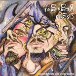

| Artist: | Rob Sbar Noesis |
| Title: | Wagon Wheels And Atom Bombs |
| Label: | Aggregate AG-77712 |
| Length(s): | 44 minutes |
| Year(s) of release: | 2002 |
| Month of review: | [05/2003] |
| 1) | Wagon Wheels And Atom Bombs (Introduction - Excerpt) | 0.18 |
| 2) | Lexical Gap | 4.21 |
| 3) | I Woke Up This Morning With This Human Skin On... | 4.13 |
| 4) | 16 Shades Of Gray | 4.30 |
| 5) | Drowning In A Vacuum (of Barbed Wire Solitude) | 5.41 |
| 6) | Media-induced Paranoia | 5.30 |
| 7) | Blue Harvest | 7.28 |
| 8) | Diet Soda, Chinese Food And A Single Yellow Daisy | 10.46 |
| 9) | Wagon Wheels And Atom Bombs (Reprise - Excerpt) | 0.39 |